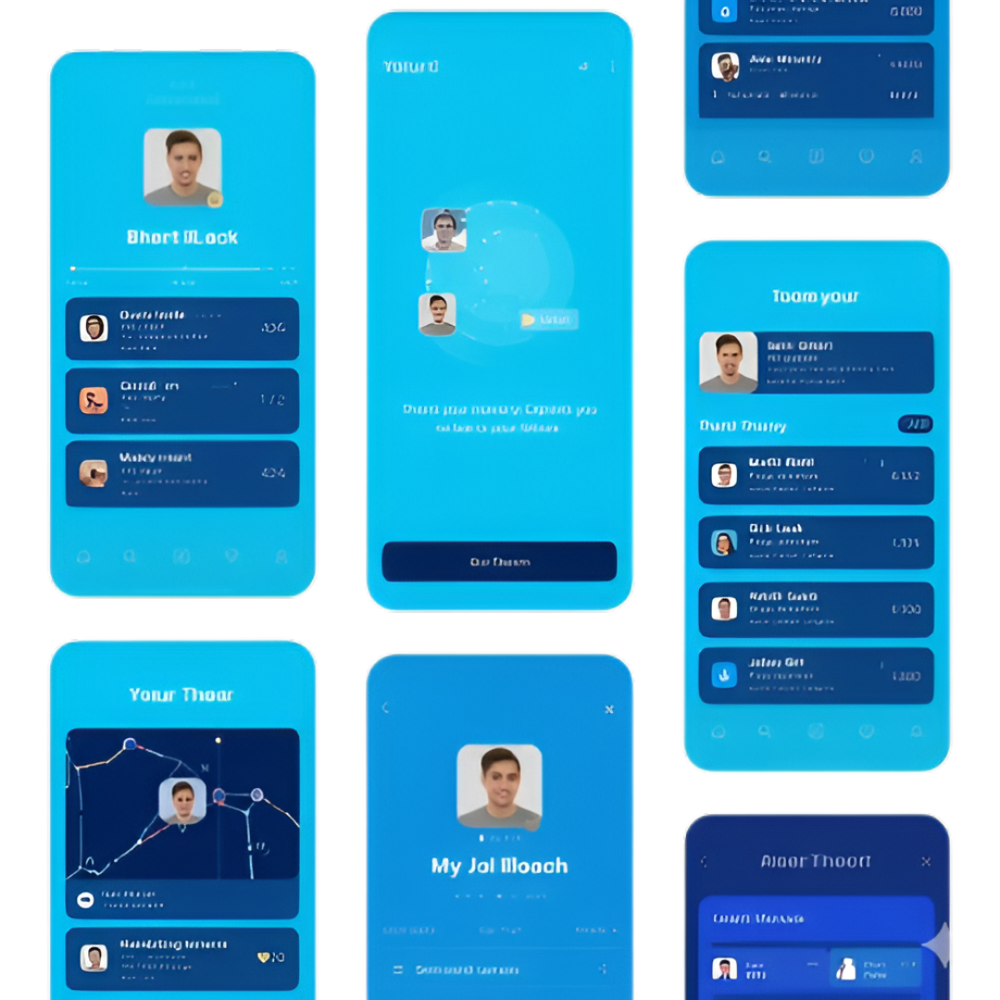
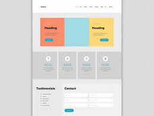
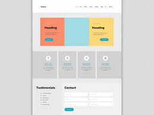
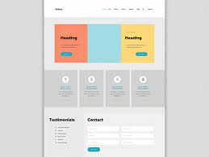
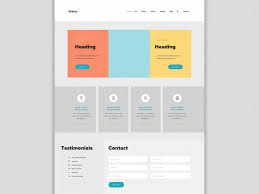

Engineering the Future of Your Digital Vision
Custom App Development | Scalable Web Systems | Enterprise IT Solutions
 



We don’t just build for today. Our "Future-Ready" approach ensures your systems handle 10x growth without performance bottlenecks.
Security isn't an afterthought; it's baked into every line of code. We protect your intellectual property from day zero.
Skip the middleman. You get direct access to the engineers building your vision, ensuring rapid iteration and transparent reporting.